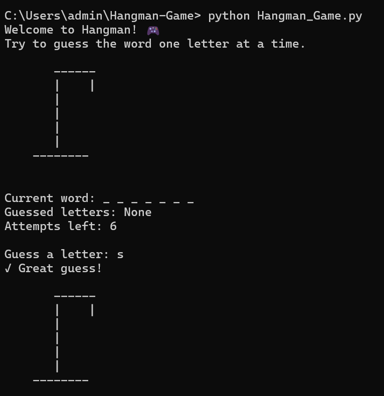
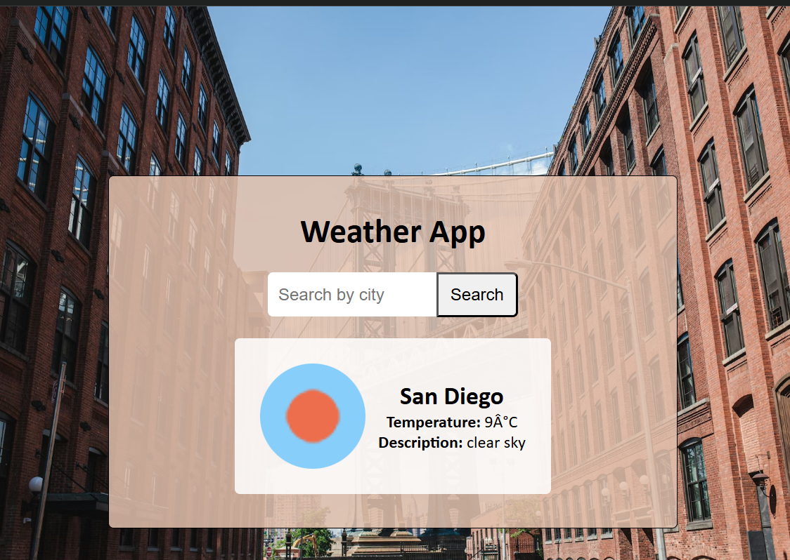
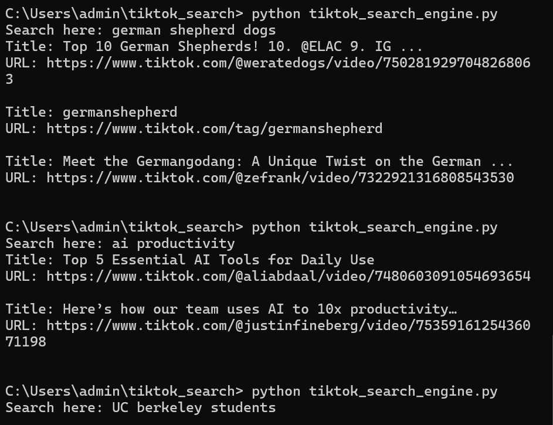
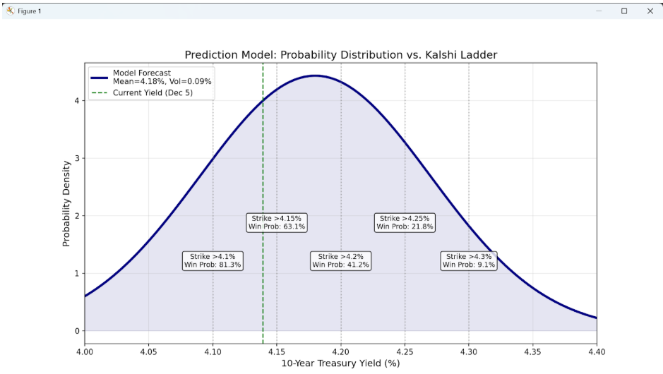

Eleyn Xiong
Economics and Data Science student • builder • learning in public
Hi! I’m Eleyn. I’m a UC Berkeley undergraduate student interested in product, data science, and prediction algorithms. This site is my little corner of the web.

Projects

Hangman Game
Hangman game with multiple attempts and user visuals.

Weather App
Simple weather app showing current conditions and forecast.

TikTok Search Engine
Search engine that indexes TikTok videos by keywords, captions, and engagement to surface relevant content faster.
AI Voice Assistant
Python-based voice assistant using speech recognition and LLMs to hold real conversations in real time.

Treasury Yield Prediction Model
A Random Forest ensemble model forecasting 10-Year Treasury Yields. Uses 5 years of OHLCV data and yield curve spreads to detect volatility anomalies and mean reversion opportunities.